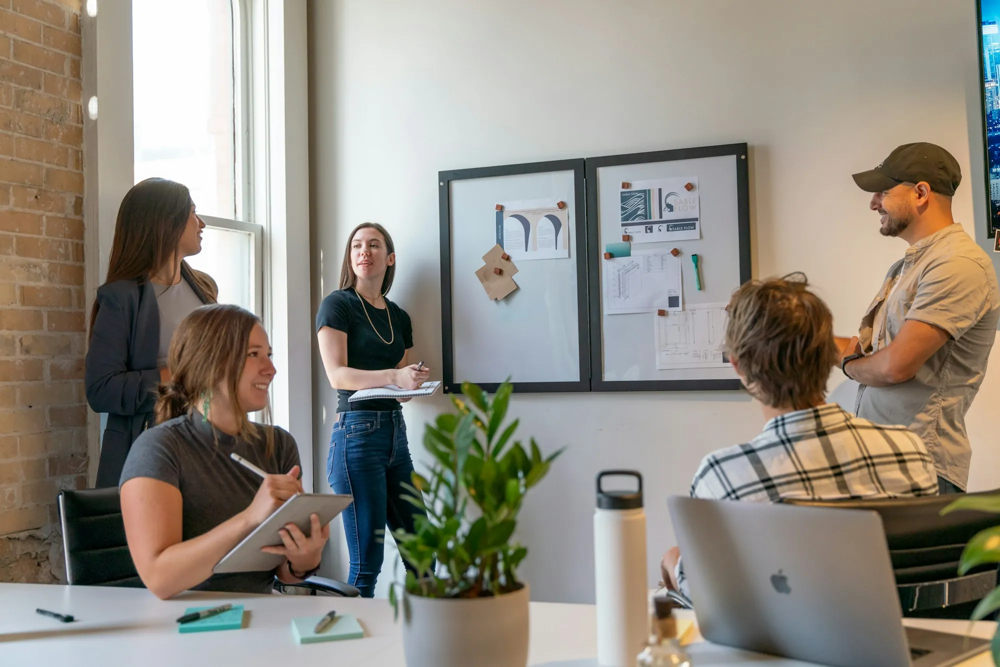

Basic
Para organizaciones que comienzan a fortalecer su gestión.
Orientación inicial y acceso a recursos para identificar prioridades y organizar acciones de mejora.
- Diagnóstico inicial
- Recursos prácticos
- Espacios grupales de orientación
Nuevo: membresías Torre 7 Proyecta para organizaciones sociales y ESAL. Conócelas

Te acompañamos a fortalecer tu gestión, formular tus proyectos y desarrollar las capacidades de tu equipo.
Toma un minutoPropuesta ajustada a tu contexto
Acompañamos a

Quiénes somos
Diseñamos soluciones integrales para fortalecer las organizaciones, con especial atención a las ESAL y las organizaciones sociales. Cada organización tiene una realidad particular: por eso partimos de comprender sus necesidades y construimos alternativas acordes con sus objetivos, recursos y contexto.
Las cuatro líneas estratégicas
 Línea principal
Línea principalFortalecimiento organizacional y gestión de proyectos. Seis servicios y tres membresías.
Ver servicios →
Formación y desarrollo de capacidades: cursos, talleres y programas a la medida.
Conocer más →
Innovación y transformación organizacional: ideación, cocreación y pilotos.
Conocer más →
Investigación aplicada y generación de conocimiento: estudios, análisis y sistematización.
Conocer más →Línea principal · Torre 7 Proyecta
Acompañamos a organizaciones sociales y ESAL en el fortalecimiento de su gestión, la planificación de su desarrollo y la estructuración de iniciativas que contribuyan a su propósito.
Identificación de capacidades, necesidades y oportunidades de mejora.
Entregables posibles: diagnóstico, matriz de oportunidades y recomendaciones priorizadas.
Acompañamiento en la definición de objetivos, prioridades, estrategias e indicadores.
Entregables posibles: plan estratégico, plan de acción, matriz de indicadores y esquema de seguimiento.
Transformación de necesidades e ideas en proyectos con objetivos, actividades, recursos, resultados e indicadores.
Entregables posibles: perfil de proyecto, marco lógico, presupuesto y cronograma, según el alcance acordado.
Identificación y análisis de oportunidades de financiación y cooperación pertinentes para la organización.
Entregables posibles: matriz de oportunidades, criterios de elegibilidad y hoja de ruta para la postulación.
No implica garantizar financiación ni aprobación.
Diseño de herramientas para monitorear actividades, resultados y avances hacia los objetivos.
Entregables posibles: indicadores, instrumentos de seguimiento, matrices de resultados e informes.
Acompañamiento para identificar oportunidades de fortalecimiento y mejorar las condiciones de continuidad de los procesos organizacionales.
Entregables posibles: diagnóstico de sostenibilidad, plan de mejora y recomendaciones de gestión.
Membresías Torre 7 Proyecta
Elige el nivel que tu organización necesita hoy. El alcance de cada membresía se define con cada organización.
Para organizaciones que comienzan a fortalecer su gestión.
Orientación inicial y acceso a recursos para identificar prioridades y organizar acciones de mejora.
Para organizaciones que necesitan acompañamiento periódico.
Apoyo para desarrollar una ruta de fortalecimiento y avanzar en acciones priorizadas.
Para organizaciones que requieren un acompañamiento más integral.
Acompañamiento estratégico para fortalecer la gestión y hacer seguimiento a iniciativas prioritarias.
Líneas complementarias
Torre 7 Capacita
Torre 7 Innova
Soluciones ajustadas a los recursos y necesidades de cada organización.
Solicitar informaciónTorre 7 Investiga
Cómo trabajamos
Escuchamos a la organización, identificamos su necesidad y delimitamos el alcance del trabajo.
Definimos objetivos, metodología, actividades, entregables y criterios de seguimiento.
Ejecutamos las actividades acordadas y construimos las soluciones con el cliente.
Revisamos los resultados, documentamos aprendizajes y proponemos acciones de continuidad cuando corresponda.
Encuentra tu ruta
Responde dos preguntas y te sugerimos la línea de servicio que mejor se ajusta a tu organización.
Con organizaciones sociales y entidades sin ánimo de lucro (ESAL) de manera especial, y también con empresas, entidades sociales e instituciones.
Sí. Estas líneas amplían la oferta de Torre 7 Proyecta y también pueden contratarse de manera independiente cuando la necesidad de tu organización lo justifique.
No. El servicio de financiación y cooperación identifica y analiza oportunidades pertinentes, criterios de elegibilidad y la hoja de ruta para postular, pero no implica garantizar financiación ni aprobación.
Los entregables definitivos dependen del diagnóstico y del alcance acordado con cada organización.
Presencial, virtual o combinada, según lo que necesite tu equipo.
Basic: diagnóstico inicial, recursos prácticos y espacios grupales de orientación. Standard: asesoría individual, hoja de ruta y revisión de avances. Premium: mentoría, revisión periódica de avances y apoyo en la estructuración de iniciativas. El alcance se define con cada organización.
Red de ESAL
Un espacio para visibilizar e impulsar a las entidades sin ánimo de lucro y organizaciones sociales que hacen parte de nuestra red.
No encontramos organizaciones con ese criterio.
Blog
Artículos prácticos sobre proyectos, gestión, formación e innovación para organizaciones sociales y ESAL.
Cuéntanos qué necesita tu organización y construiremos una propuesta de acompañamiento ajustada a tus objetivos, recursos y contexto.